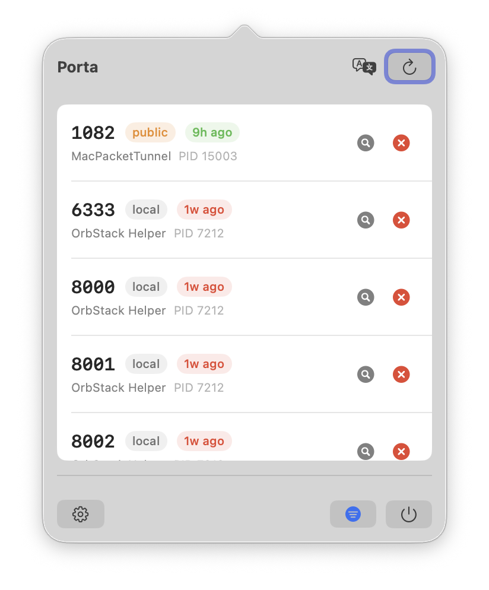
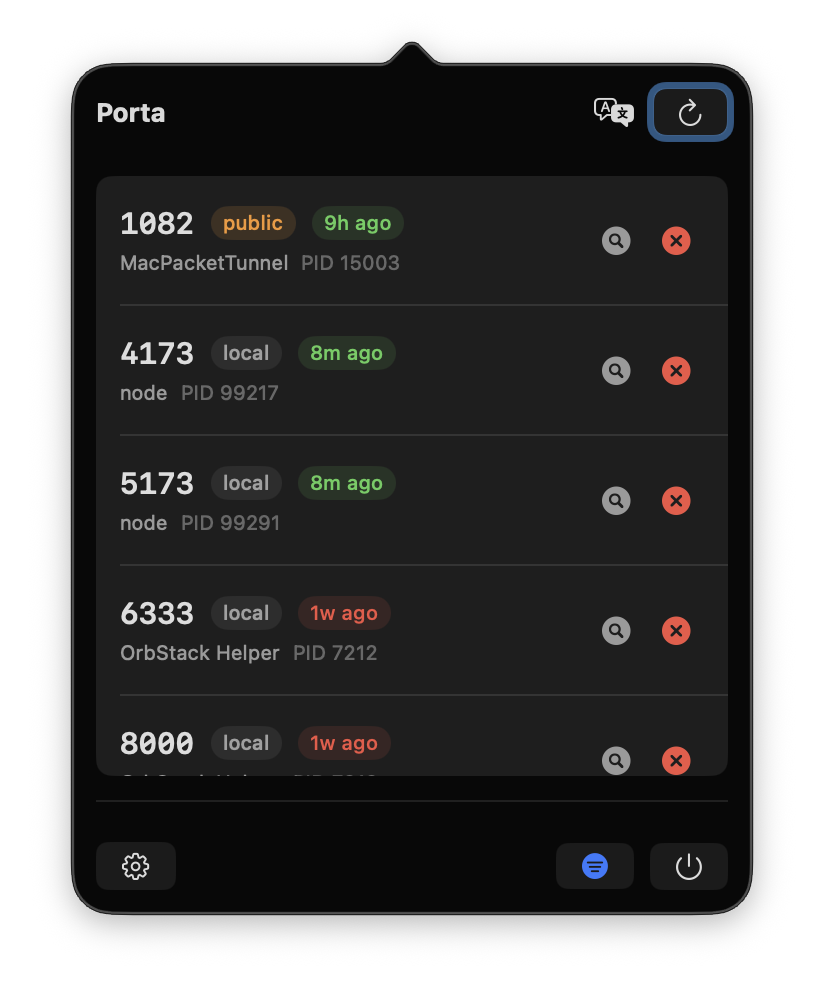
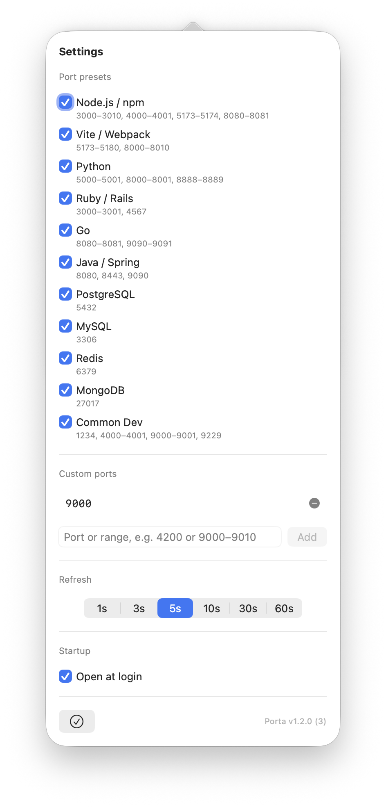

See and manage listening ports
right from your menu bar.
Porta shows the process behind each TCP listener, how it is exposed, and how long it has been running. Inspect it in Activity Monitor or stop it safely in one click.
Web servers, databases, background jobs, and desktop apps can all open TCP ports. When a listener is forgotten or causes a conflict, finding its owning process should not require a trip through the terminal.
Porta sits quietly in your macOS menu bar, continuously running lsof -iTCP -sTCP:LISTEN on a configurable timer. Separate IPv4 and IPv6 entries for the same process are coalesced into a single row — no duplicates, no noise. Just a clean list of what's running and a single click to stop it.
Lightweight by design: no Dock icon, near-zero CPU and memory usage, and zero third-party dependencies. Built with Swift and SwiftUI, it works entirely through standard macOS APIs.
A minimal, focused UI — everything you need, nothing you don't.



Everything you need to understand and manage listening ports.
Powered by lsof, surfaces matching TCP LISTEN-state ports and their owning processes. Updated at your chosen refresh interval.
Re-verifies the PID still owns the port before acting. Sends SIGTERM, waits 2 seconds, then escalates to SIGKILL if the process persists.
Each port shows local (localhost-only) or public (all interfaces) so you know your exposure at a glance.
Age pills move from green to amber to red as a process runs longer, making potentially stale listeners easy to spot.
11 tool categories to toggle: Node.js/npm, Vite/Webpack, Python, Ruby/Rails, Go, Java/Spring, PostgreSQL, MySQL, Redis, MongoDB, and more.
Add individual port numbers or ranges (e.g. 9000–9010) with per-entry validation. Flexible enough for any workflow.
One-tap toggle in the footer bypasses all preset and custom filters, showing every TCP LISTEN port instantly. macOS system daemons are always hidden.
Switch between English and Simplified Chinese with a single tap. Language preference is remembered across sessions, independent of your OS locale.
A dedicated app icon, automatic Light/Dark appearance, launch at login, and a menu-bar-only design that stays out of your way.
Built on macOS-native APIs. No framework overhead.
| Language | Swift 5.9+ |
| Platform | macOS 13.0 (Ventura) + |
| UI Framework | SwiftUI + AppKit (NSStatusItem, NSPopover) |
| Port Detection | lsof -iTCP -sTCP:LISTEN -P -n -F pcPtn |
| Persistence | UserDefaults — no database, no files |
| Dependencies | Zero third-party dependencies |
| Login Item | SMAppService |
Requires Xcode 15+ and any Apple ID (free) for local signing.
$ git clone https://github.com/jameswei/porta.git
$ cd porta
$ open Porta.xcodeproj
# Press ⌘R in Xcode to build and run
# Gatekeeper bypass for downloaded releases
$ xattr -cr /path/to/Porta.app && open /path/to/Porta.appPorta is open-source under the MIT license. Star it, fork it, or open an issue.
View on GitHub